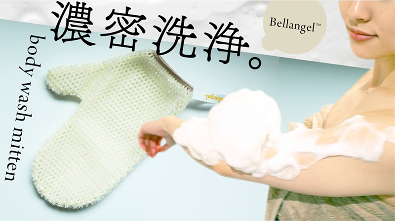
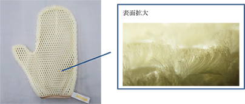
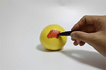
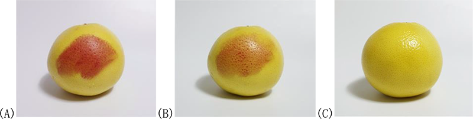
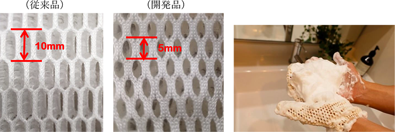

総合繊維メーカーのセーレングループである原糸メーカー:KBセーレン株式会社(本社: 大阪市北区梅田/代表取締役社長:寺前勝基)は、独自の技術で開発した熱融着ポリエステル繊維「ベルカップル®」を使用した「ボディウォッシュミトン」を2021年7月21日より応援購入サービス「MAKUAKE」にて発売致します。
https://www.makuake.com/project/kb-seiren/
KBセーレンのBtoC 商品はこれまで、ベンダーを経由して小売店舗での販売をメインとしており、今回のクラウドファンディングを活用した消費者への直接の販売は当社初の試みとなります。
新商品のボディウォッシュミトンは、差別化原糸「ベルカップル」を使用したダブルラッセル生地を採用しています。メッシュの大きさを従来比1/2サイズに変更することで密度を高め、洗浄効果大幅アップを可能にした新素材をミトン専用に開発しました。
ミトン表面のブラシの繊維本数は、従来比2倍の約72万本となります。原糸メーカーならではの技術力・素材力による、その高い洗浄力・泡立ちの良さ・国内生産の安心感・取り扱いのしやすさを、ぜひ多くの方に体感いただきたいと思っております。
KBセーレンは今回のプロジェクトを契機にダイレクト販売を拡大し、BtoC戦略を推進してまいります。
「ボディウォッシュミトン」の商品特長
①洗浄力
極細繊維が毛穴の隅々にまで入り込み、たまった汚れを優しくきれいに洗い流します。

【洗浄力試験】
市販のグレープフルーツに口紅を塗り、以下の3パターンで汚れ落ちの実験

▶手で洗った場合(A) ▶フェイスタオルで洗った場合(B) ▶本製品で洗った場合(C)

②泡立ち力
極細繊維を使用し、メッシュの網目も細かくしたことで、泡立ちがバツグンに。

③使いやすさ
サッと手にはめるだけ。手首部分にポリウレタンを採用することで脱げにくくしました。
④国内生産
糸の製造から縫製加工まで自社管理の元、すべて日本国内にて一気通貫で生産。
⑤取り扱いのしやすさ
汚れや菌が気になる場合にはネットに入れて洗濯機でカンタン洗浄。メッシュ地なので乾きも速い。
MAKUAKE プロジェクト概要
- 商品名：
- Bellangel™ ボディウォッシュミトン
- 入数：
- 1枚入
- 価格：
- 1,980円（税込）
早期購入割引他、各種販売パターンあり
- 素材：
- ポリエステル
- カラー：
- ベージュ
- 期間：
- 7月21日(水)~9月29日(水)
「Bellangel(ベルエンジェル)™」「ベルカップル®」は KB セーレンの商標です。
ご参考
■KBセーレン概要
2005年7月1日にカネボウから主な繊維事業を継承。セーレングループの原糸製造部門。ポリエステル長繊維の製造および販売、繊維素材の編立・加工及び販売、左記繊維二次製品 の製造・販売が主たる業務。
■ベルエンジェルについて
KBセーレンがBtoC販売向けに新規に立ち上げた美活雑貨ブランド。清掃雑貨ブランド「そうじの神様®」、マスクなど快適雑貨ブランド「フレシェリー®」に続く3番目の自社ブランドとして、今後商品を拡大。
■ベルカップルについて KB セーレンが開発した芯鞘型熱融着ポリエステル糸。ヒートシール性(目ズレ防止)、形態安定性、硬度調整性に優れた無溶媒で熱融着させることができる繊維。
本件に関するお問い合わせ
KBセーレン株式会社
経営企画室 広報担当 吉本勝
大阪本社 TEL.06-6345-5204
携帯直通 TEL.090-4329-6897